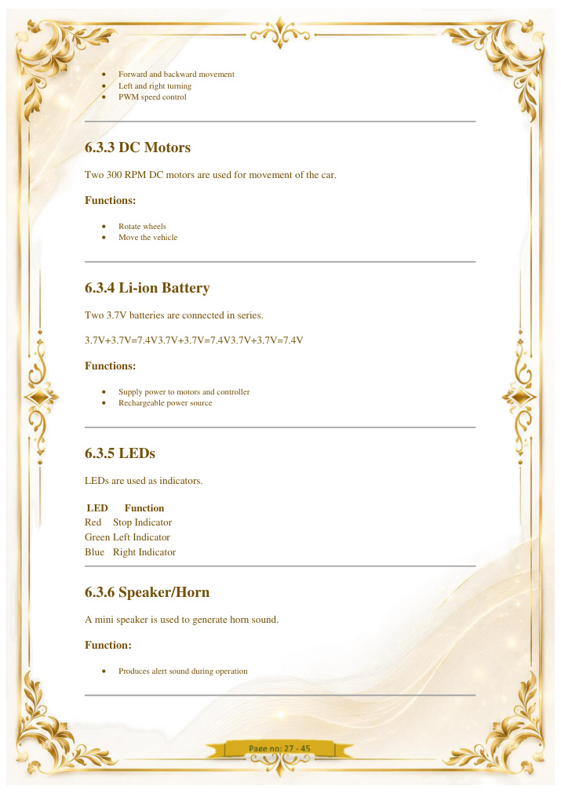
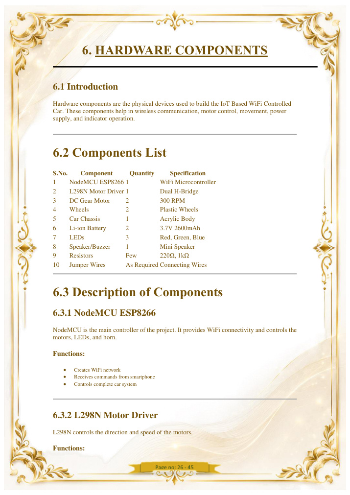
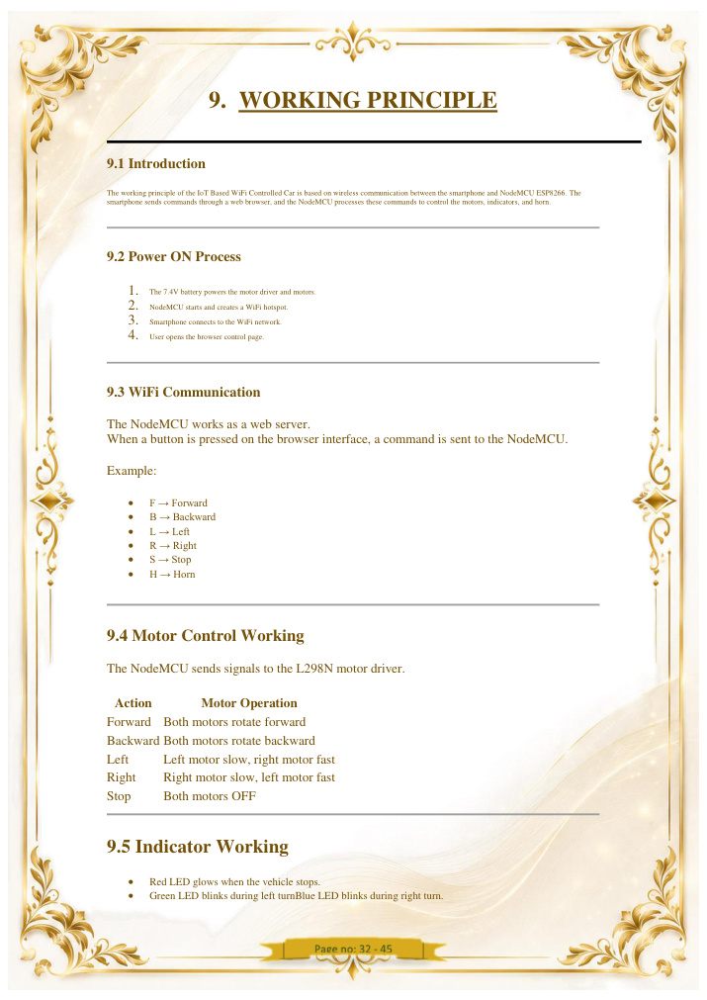
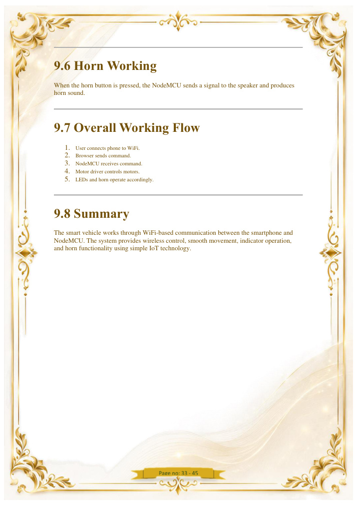
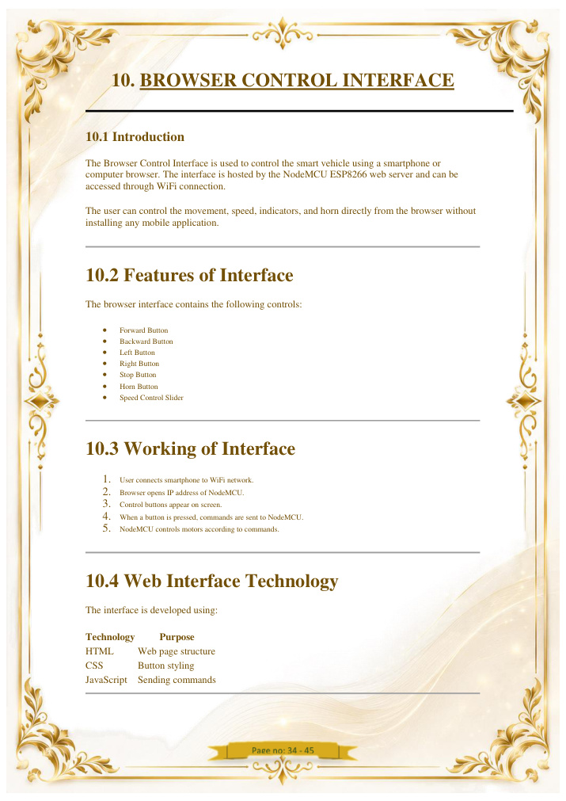
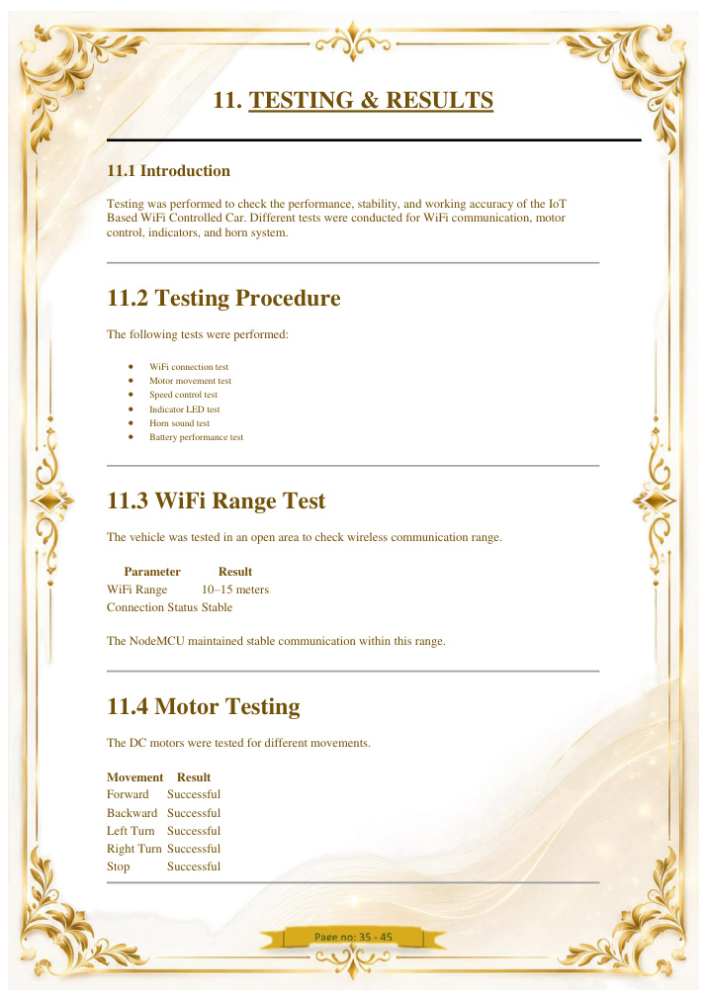

IoT Based WiFi Controlled Car
A browser-controlled smart vehicle built around ESP8266 NodeMCU, L298N motor control, DC motors, indicators, horn and PWM speed control.
Project at a glance
The supplied source report describes a WiFi-based robotic car in which the ESP8266 acts as both controller and web server.
WiFi Control
ESP8266 creates a local WiFi access point and serves a browser control interface.
Vehicle Movement
Forward, backward, left, right and stop commands are translated into motor-driver signals.
PWM Speed
Motor speed is controlled through PWM values in the 0–255 range.
Indicators
Stop, left-turn and right-turn indication is included in the design.
Horn
A browser command activates the horn output for an alert sound.
7.4V Supply
Two 3.7V Li-ion cells are connected in series for the vehicle supply described in the source report.
System architecture
Command flow from the user's phone to the vehicle.
Smartphone
Browser
WiFi
Car_WiFi
ESP8266
Web Server
L298N
Motor Driver
DC Motors
Vehicle motion
Indicators + Horn
Output devices
Hardware & connections
Components and connections documented in the supplied project material.
| Component | Role | Documented connection / note |
|---|---|---|
| ESP8266 NodeMCU | Main controller + WiFi web server | Creates the Car_WiFi network and receives browser commands. |
| L298N Motor Driver | Drives DC motors | IN1–IN4 for direction; ENA/ENB for motor speed control. |
| Two DC Motors | Vehicle movement | Left and right motor control. |
| Li-ion Batteries | Power supply | Two 3.7V cells in series → 7.4V. |
| LEDs | Visual indication | Red stop, green left, blue right as described in the report. |
| Speaker/Buzzer | Horn | Activated by the H command from the browser interface. |
Pin map from the supplied report
D1/D2 → left motor direction; D3/D4 → right motor direction; D0/D5 → speed enable; D6/D7/D8 → indicators; the supplied appendix also assigns D6 to the horn.
Working sequence
A simple real-time control chain.
Mobile Browser Control Interface
The car is controlled from a mobile phone after connecting the phone to the car's Wi-Fi network. The control page opens directly in the mobile browser.
↑ Forward · ↓ Backward · ← Left · → Right · STOP Stop
Live project demonstration
Place your real project video here. The report is aly prepared to load iotcar-iot-card.mp4.
Recommended file name: iot-card.mp4. Put it inside the website's media folder before sharing the final ZIP.
Technical visuals
Selected visuals reconstructed from the supplied project report for easier digital presentation.






Testing & reported results
Values below are reproduced as project-report claims from the supplied document and should be understood as the project's documented test results.
WiFi range
10–15 m was reported in the open-area test, with stable communication.
Movement
Forward, backward, left, right and stop were reported as successful.
Speed
PWM range documented as 0–255 with smooth variation through the control input.
Indicators
Red, green and blue indicator functions were reported as working.
Horn
Horn response was reported as successful from the browser interface.
Overall
The supplied report records minimum delay and stable performance during testing.
Software & code snapshot
The supplied report documents Arduino/C++ firmware plus an HTML/CSS/JavaScript browser interface.
Arduino IDE
Used to program the ESP8266 NodeMCU.
ESP8266WiFi
Provides WiFi connectivity and access-point operation.
ESP8266WebServer
Hosts the control page and handles command requests.
Command map
Commands documented by the supplied firmware.
| Command | Action | Firmware function |
|---|---|---|
| UpArrow | Forward | moveForward() |
| DownArrow | Backward | moveBackward() |
| LeftArrow | Left | moveLeft() |
| RightArrow | Right | moveRight() |
| Stop | stopCar() | |
| Horn | Horn | playHorn() |
Advantages & applications
The project demonstrates a low-cost wireless robotics platform with room for further expansion.
Advantages
Wireless browser control, no dedicated RF remote, low-cost components, rechargeable supply and real-time response.
Applications
Education, robotics experimentation, prototype surveillance platforms and industrial automation concepts.
Conclusion
A concise project-level conclusion.
Declaration
Individual-project version.
I, MD DILSHAD ALAM, declare that this project report represents my individual project work. The system was designed and developed by me with the assistance of AI tools used as a development and support aid. No team member is included in this individual version of the report.